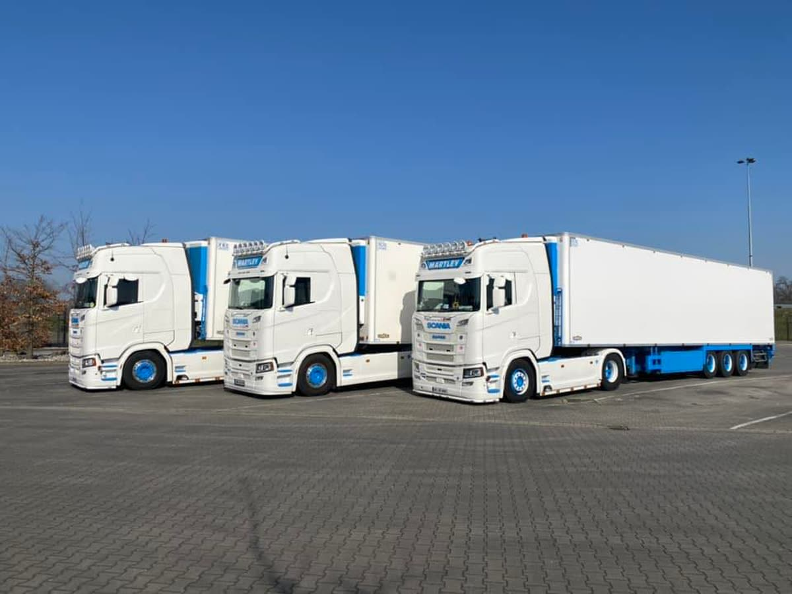
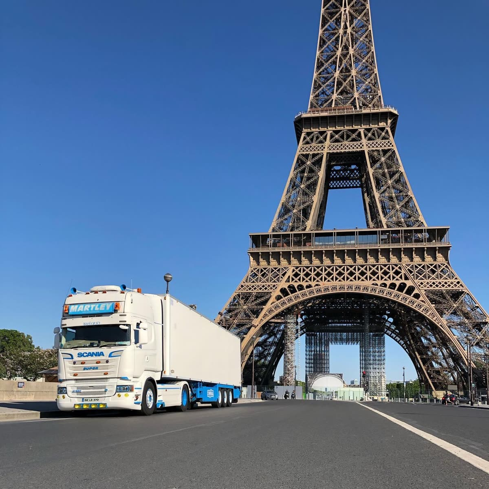
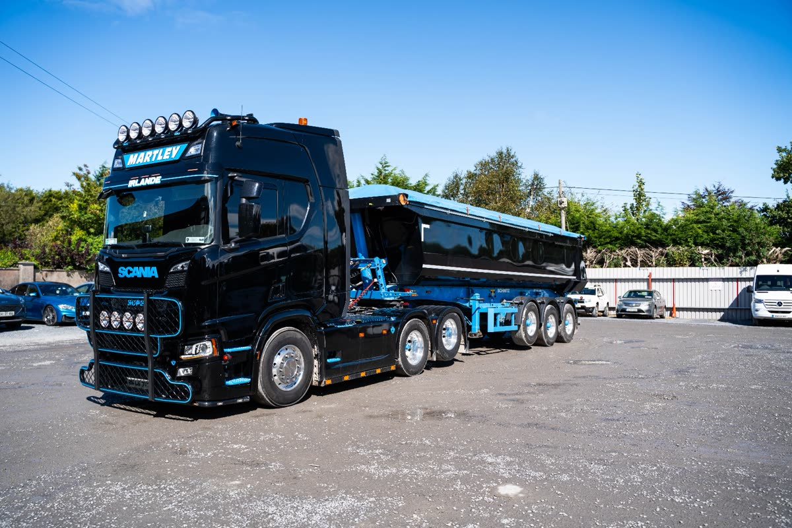
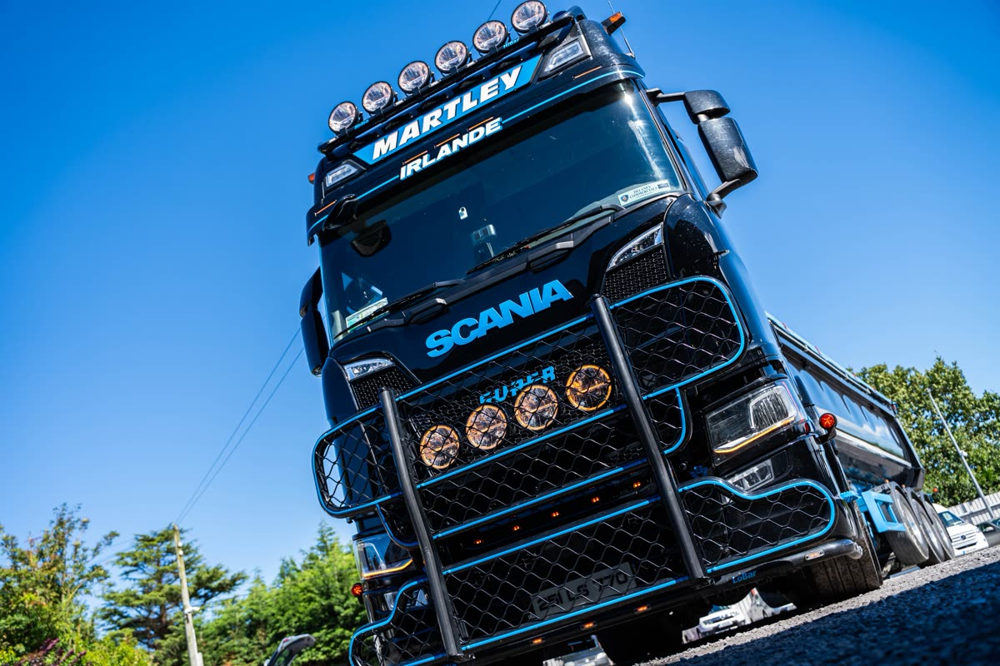
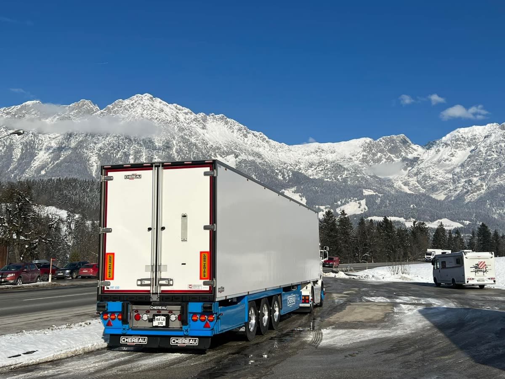
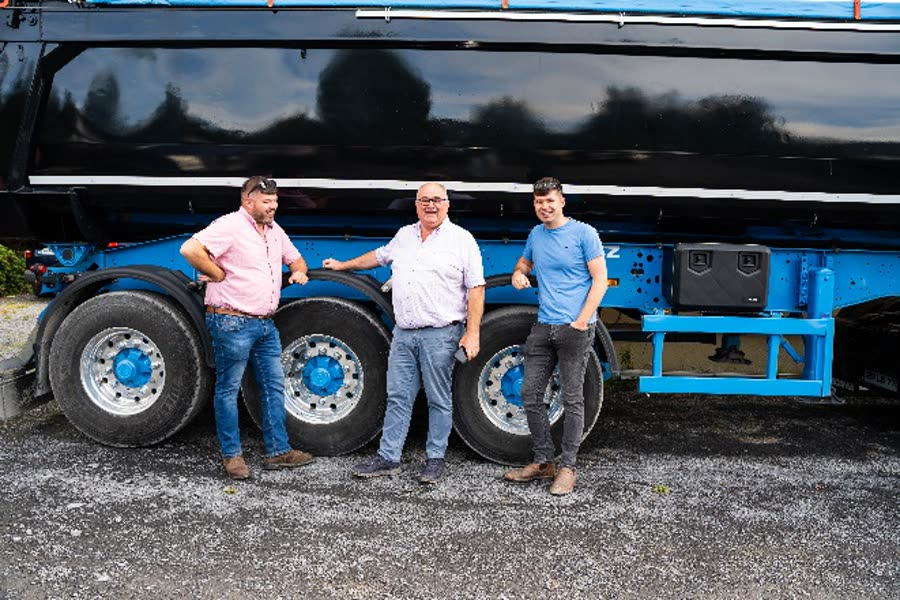

01CONTROLLED FREIGHT
Temperature controlled transport
Fresh, frozen, pharmaceutical and ambient goods, carefully managed throughout the journey.
Explore serviceFrom temperature-sensitive freight to the toughest loads, we keep your business moving with care, precision and a personal commitment to every journey.
We believe good logistics is about more than getting from A to B. It is knowing your load matters, and taking responsibility for it at every step.
Martley International is part of Portlaoise Logistics, a family run, Irish owned business with over 40 years of transport experience. From our base in County Laois, our dedicated team delivers tailored solutions across Ireland, the UK and Europe.
The Martley approach
Specialist equipment. Experienced people. A flexible service built around what your business needs to move.

01Fresh, frozen, pharmaceutical and ambient goods, carefully managed throughout the journey.
Explore service
02Aggregates, muck shifting and blacktop for construction, quarrying and infrastructure projects.
Explore service
03Recovery and transport solutions for cars, vans, trucks, buses and heavy equipment across Ireland.
Explore service
Our Chereau refrigerated trailers support temperatures from −25°C to +25°C, with live telematics and temperature reporting to help protect the integrity of every delivery.
Every load has its own demands. We combine the right vehicle, the right people and careful planning to get the job done.
Dependable movements of sand, gravel, aggregates, excavated material and blacktop for projects across Ireland and the UK.
From light vehicles to trucks and heavy equipment, specialist recovery equipment helps reduce disruption and downtime.
Practical customs clearance assistance and transport planning for goods moving between Ireland, the UK and Europe.
Trucks are more than our business. They are our passion. Our modern fleet is maintained by skilled mechanics at our on-site workshop, backed by a preventative maintenance programme.
Behind every delivery is a team that knows the value of doing things properly. Our drivers, planners, mechanics and workshop staff work together to keep your goods moving safely and reliably.
Professional drivers with the training and qualifications for the work they do.
Tracking, monitoring and regular communication throughout the journey.
On-site servicing and preventative maintenance support our fleet on every mile.

Tell us what you need to move and where it needs to go. Our team will help find the right solution.
Email your enquiry